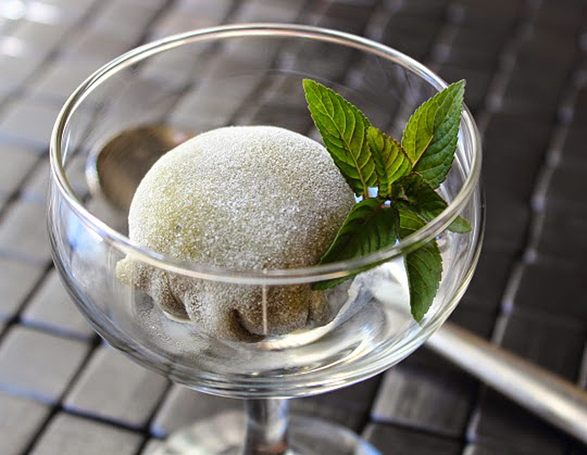

Mochi Ice Cream

Description:
An easy approach to the classic japanese recipe, mochi ice cream!
Ingredients
- 10 small scoops of vanilla ice cream
- 1/2 cup of sweet rice flour
- 1/2 cup of cold water
- 1 pinch of salt
- 2 tablespoons of white sugar
- 1 teaspoon of green tea powder (matcha)
- 1 tablespoon of cornstarch, or as needed
Steps
- Remove and discard the top half of a cardboard egg carton. Line 10 of the cups
in the bottom half of the egg carton with plastic wrap.
- Scoop ice cream into 10 prepared egg carton cups. Cover scoops with plastic wrap and freeze
until very firm, at least 2 hours.
- Stir rice flour, water, and salt together in a microwave-safe bowl; add sugar and stir until
completely smooth. Whisk green tea powder into rice flour mixture.
- Cover the rice flour mixture bowl with plastic wrap; microwave for 2 minutes. Stir rice flour
mixture, re-cover the bowl with plastic wrap, and microwave until mochi dough is thick and
sticky, about 1 1/2 minutes more.
- Lightly dust a work surface with cornstarch. Turn mochi dough out on prepared
work surface. Roll dough into a 1/8-inch thick rectangle; cut dough into 10 equal squares.
- Remove ice cream balls from plastic wrap. Place 1 ice cream ball in the center of 1 mochi
dough square. Gather mochi dough together to cover the ice cream ball completely, pinch the
edges together at the base, and cut off any excess dough. Repeat with remaining ice cream
and dough squares.
- Tightly cover each mochi ball in plastic wrap and place in egg carton, seam-side down. Freeze
until firm, about 2 hours.